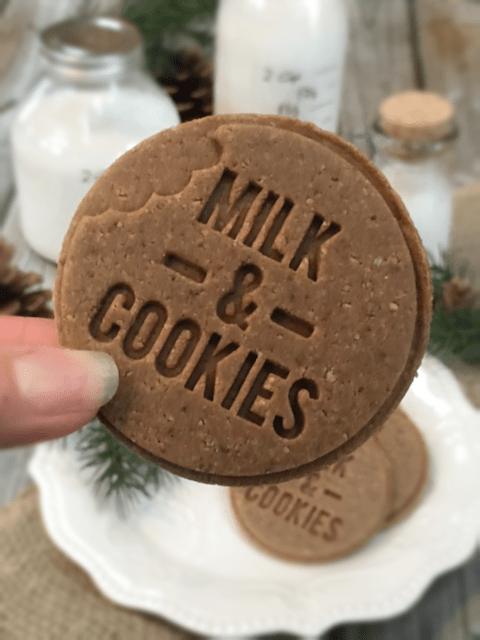

Message in a Cookie Hum Muds
– raw, vegan, gluten-free –
These little cookies spice up the holidays in the sweetest way! Each one perfectly spiced and absolutely irresistible… well, if you ask me, they are. Go ahead…ask me? Really, just ask… ASK ME! lol

This recipe was inspired by my Hum Mud cookies, which is one of the most requested cookies from my husband. He loves to tease me that I can never make a recipe more than once. He is right to some degree. I have made this recipe for him over and over, BUT I change up how it looks. Lol, My creative side can’t help itself, and who am I to argue with it?!
I came across (this) cookie stamper a while back and had been itching to use it. Stamping took some trial and error to get the hang of… At first, my stamps were uneven and, at times, hard to read.
Come gather around… I am about to reveal an ancient technique that has taken some years to master, but for me… only 10 minutes. And those are 10 minutes that I want to save you from losing.
Here’s the trick. After rolling the dough out, press the mold firmly into the dough. Then without lifting it, gently circularly rock the mold a few times. Return the handle to an upright position and remove it. By doing this, it will create a very clean-cut “print out” on your cookies.
I purposely rolled these cookies nice and thin, which is the opposite of how I originally made them. I wanted to create almost like a gingersnap cookie. I accomplished that but without the snap. These cookies are firm and stackable, but they don’t SNAP like a hard, crunchy cookie. I hope you have fun with these. Blessings, amie sue

Ingredients:
yields 20 cookies
Preparation:
- In the food processor, fitted with the “S” blade, combine the almond flour, coconut crystals, cinnamon, cloves, ginger, and salt. Process together, making sure all the spices are distributed.
- I created a fine almond flour from the dehydrated almond pulp. You can create your own the same way, purchase a store-bought processed almond flour or use ground nuts (will change the texture of the cookie.)
- Add the sweetener, coconut oil, and water. Process until it forms a thick dough ball as it spins about the food processor.
- I only make these with molasses which isn’t raw. It does come with some health benefits and gives the cookie that deep rich flavor that I was aiming for.
- Roll the cookie dough out to about 1/4” thick. I did this on my non-stick dehydrator sheet, and when I rolled it, I placed plastic wrap on top.
- Press the mold firmly into the dough. Then without lifting it, gently circularly rock the mold a few times. Return the handle to an upright position and remove it.
- Use a circular cookie cutter that is a smidgen larger than the stamp. Do this process over and over until all the dough is used up.
- Place the cookies on the mesh sheet that comes with the dehydrator.
- Dehydrate for 1 hour at 145 degrees, then reduce to 115 degrees (F) for 10-16 hours.
- I found these did well stored in a container with a loose-fitting lid.
Culinary Explanations:
- Why do I start the dehydrator at 145 degrees (F)? Click (here) to learn the reason behind this.
- When working with fresh ingredients, it is essential to taste test as you build a recipe. Learn why (here).
- Don’t own a dehydrator? Learn how to use your oven (here). I do, however honestly believe that it is a worthwhile investment. Click (here) to learn what I use.
© AmieSue.com